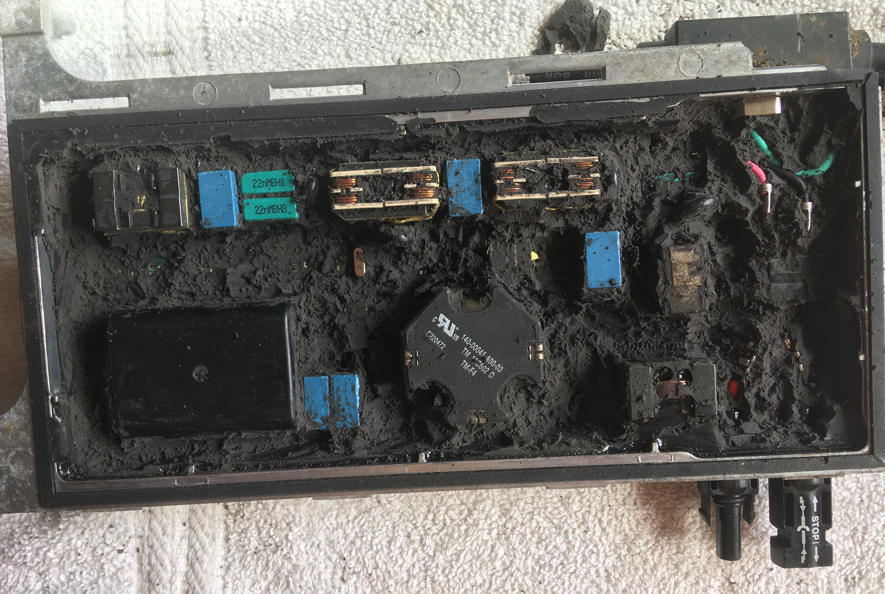
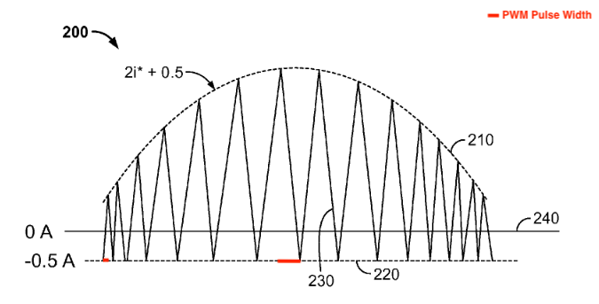

Introduction
My parents recently installed solar panels on their roof to transistion to renewable energy use while at the same time breaking their dependence on the grid for energy supply. In addition to solar panels, microinverters for each solar panel and a centralized battery are required to run the house off of solar energy. The primary function of the microinverters is to convert the low voltage DC power coming from each panel into high voltage AC power that can be used in the house circuits. The battery allows energy to be stored when more energy is produced by the panels than is used in the house. When one of the Sunpower MI-C-320-US208/240-00 Microinverters failed on my parents roof, I had the opportunity to crack it open and try to understand how it worked.

Front View

Back View
Before I get into the teardown, I'd like to discuss a bit of the history of how microinverters came to be and what other products are used as alternatives based on some quick internet searches I did. Any solar energy system includes some kind of inverter to convert the DC output of the panel to the AC input used in power lines, homes, and appliances. Inverters accomplish this conversion from DC to AC fundamentally through a series of electrically controlled switches (usually IGBTs) that are rapidly opened and closed over intervals oscillitating in length (i.e Pulse Width Modulation (PWM)) imitating the sinusoidal nature of alternating current. When solar panels first came about commercially, the energy was converted from AC to DC using string inverters. Several solar panels would be connected together through linking wires, forming a "string" of solar panels, and then fed into one centralized inverter unit. Daisy-chaining the solar panels in this fashion makes for easy installation, but when the output of one solar panel in the string is lowered, all the rest in the string are limited by that weakest link. To combat this issue, power optimizers can be placed on each panel to modulate the DC power output of each panel so that they can function at their highest output independent of the output of others in the string. The power optimizers on each panel also allow one to monitor the output of individual panels rather than just the output of the whole string. Despite these improvements, power optimizers still require the use of a centralized inverter which limits the size of the solar panel array that can be used and introduces a central point of failure capable of shutting down all system functionality. Adding an inverter unit under each solar panel—microinverters—addresses these problems at the expense of higher part and installation costs. String inverters, inverters with power optimizers, and microinverters each provide different benefits and so the decision of which to use is often left to the user with recommendations provided based on their particular application.
Potting Compound
Although I had heard of NEMA ratings before this teardown in describing how well smart phones were sealed, the experience of opening up this microinverter gave me a much greater appreciation for what exactly it means to seal electronics. The National Electrical Manufacturers Association (NEMA) develops standards for the manufacture of electronics. One such standard (NEMA Standard 250) is used to categorize the performance of electircal enclosures against environmental contaminants such as dirt and moisture. Based on an online seller for this product, the microinverter has a NEMA Enclosure Rating of NEMA 1, the lowest on the rating scale. At this level, the microinverter enclosure is only expected to protect people from any hazardous parts that may be contained inside and prevent any solids like dirt from entering the enclosure in indoor environments. This hardly seems like an appropriate rating for a product that will be sitting on the roof exposed to windswept dust, rain, and hot sunshine. Diassembling the product seemed to reaffirm that this product deserved a much higher NEMA Enclosure Rating than had been given by the online seller.
The first step in the diassembly was removing the metal back cover secured by ten metal tabs mated to slots on the body. This alone would have likely been sufficient for a NEMA 1 rating. Underneath the metal cover lay a thick plastic sheet that I was able to peel back using just my fingers. What lay below shocked me. The entire printed circuit assembly (PCA) had been submerged in a potting compound having the consistency of rubber and a sweet fruity odor. Being completely submerged in this rubber-like compound, the microinverter PCA was hermetically (airtight) sealed. It's hard to imagine what could damage the circuit board except maybe an explosion. It was then that I learned how long this teardown would take if I wanted to get an idea for how the microinverter worked. Using a flathead screwdriver, pair of needle nose pliers, and a box cutter I (with help from my dad from time to time) removed as much of the potting compound as possible to expose the PCA that lay underneath.

Sealed Microinverter PCA
Potting Compound Exposed from Underneath Stiff Plastic Sheet
PCA Components Partially Exposed From Excavation

Exploded View with PCA Fully Exposed
Hoping to find more information about how the microinverter worked, I scanned through Sunpower's AC module (used synonymously with microinverter I think in this case) patents—for which they had provided a link on the back cover of the microinverter. Most of the patents appeared to focus on the circuit schematics of the microinverter, but one included sketches of the physical structure of one of their microinverters, albeit an older and substantially different looking model. Nonetheless, they discussed the potting process somewhat and I found it interesting that they mentioned the potting compound electrically insulates components from one another in addition to protecting the board from environmental effects. I imagine overheating is also a major concern when submerging boards in a thick insulating potting compound as the electrical components cannot release heat as quickly as when they are exposed to just air. The patent, linked here, mentioned that electrical components likely to release a lot of heat could be partially exposed or connected to heat sinks exposed to the surface to ensure they don't overheat.
Microinverter PCA
Using the silkscreen PCB labels, patent schematics, and online resources for power electronics I did my best to identify the important components of this microinverter PCA. With that being said, the labels in the picture below are merely educated guesses. I've had no formal training in electrical engineering. Furthermore, I'm missing a large chunk of information since I wasn't able to easily remove the board and examine the components mounted on the underside.

Microinverter PCA
There's a lot happening on this PCB, but some generalizations can be made across the board. The blue, green, and gray plastic boxes are likely film capacitors. The yellow disc-like nubs at both the DC input and AC input are also capacitors, although I'm not sure what kind. The metals blocks with exposed copper wiring are fundamentally just large inductors or sets of inductors. These inductors include the blocks labelled inductor, transformer, and choke. The compact black boxes with many pinouts are integrated circuits (ICs), but what function they serve is not easily evident from the outside. I guessed their functionalities based on their size and relative locations on the board. The large black box in the bottom right didn't appear to be labeled. Any number of things could be hidden under the enclosure, but given it's heft I guessed it might be a backup battery. I'm guessing this backup battery is used when the solar panel isn't producing any energy and the microinverter wants to continue communicating with the centralized power distribution system to tell it that the microinverter is still functioning properly despite it not producing any energy. This hypothesis was inspired by the fact that the people who replaced the inverter stated that they had received notice from the microinverter that it had failed. One thing that I saw that I hadn't seen before were test points (silkscreen labeled TP). Test points are conductive discs on the PCB where someone could stick a multimeter probe to take measurements, likely for quality assurance purposes. Beyond that, there are tons of tiny surface mount capacitors, resistors, diodes, transistors, and ICs.
Looking at the PCA gives us some idea of what components play a role in the microinverter operation, but it doesn't tell us how the product works. To understand this, I went to the patent material for this microinverter and supplemented this with internet searches on power electronics concepts. Generally, the functionality of the microinverter can be split into two stages: input processing and output processing.

Big Picture Block Diagram of Microinverter (US 8,284,574)
Input Processing

Input Processing Steps Circuit Diagram (US 8,284,574)

Output Processing Steps Circuit Diagram (US 8,284,574)
Input Converter Controller Block Diagram (US 8,284,574)
Power-Voltage Curve for a Shaded (dashed line) and Unshaded (solid line) Solar Panel (US 9,477,247)
Input Converter Block Diagram (US 8,279,642)

Input Converter Circuit Diagram (US 8,279,642)
Boost Converter Circuit
Output Processing

Inverter Circuit Diagram (US 8,508,964)
Alternating Current Generated from PWM of DC Source Through Inductors (US 8,508,964)
Output Converter Controller Block Diagram (US 8,284,574)

Output Converter Block Diagram (US 8,279,642)
Output Converter Circuit Diagram Part 1 (US 8,279,642)
Output Converter Circuit Diagram Part 2 (US 8,279,642)
Blue, green, and gray boxes are film capacitors. Yellow capacitors by DC input and AC output are likely also film capacitors, although the disk shape made me think of ceramic disk capacitors (but they're not glossy). First controller and transformer likely involved in maximum power point tracking to ensure that the maximum power is extract from the solar panel. Where is the inverter stage where the DC is actually converted to AC? There are likely other components on the bottom of the board like the transistors used to convert DC to AC and modulate the voltage output of the MPPT transformer. Maybe one power transformer to maximize power draw from solar panel, another to lower the voltage to power controllers on board, and another to raise the voltage to 120 V for AC release. Black square is probably a microcontroller, black rectangles are probably gate drivers used to raise the low-power input from a controller IC to a high-current drive input for the gate of a high-power transistor (like an IGPT or power MOSFET).
DC power enters the microinverter unit between 12 and 80 V. The voltage and thus current draw from the solar panels is adjusted continuosly to maximize the power output since the relationship between power (the product of voltage and current) is not linearly related to the voltage for solar panels. Instead, a voltage exists for which the maximum amount of power can be drawn from the solar panels. This process is called maximum power point tracking and requires a controller IC to monitor the power output and adjusts the voltage of a DC-DC buck-boost converter (transformer wouldn't work for AC). The black disk likes pieces labeled RV are variable resistors. The RU logo is the "recognized component mark" used by Underwriters Laboratories (UL), a engineering safety certification company, to indicate the parts labeled meet certain quality standards. It appears that there are inductors at the power connections for the AC output, I'm not sure why. Talk about why the AC output has a neutral line while the DC input does not. Instead using a buck-boost converter, sometimes DC is converted to AC, then voltage changed with a transformer, and then rectified. Actually it looks more like a flyback transformer is used witha coupled inductor (similar but different to a transformer). Microinverter has to accomplish several goals: extract maximum power, step-up voltage, and convert to AC. Big hexagon transformer likely has multiple windings for different inductor ratios, but duty cycle could also be changed to change output voltage. Chokes are used to filter out noise (can be seen in schematic). Lots of noise produced during the inversion process when rapidly flipping on and off gates. Chokes come in two kinds: common mode (for two conductors) and differential mode (for one conductor). Good resource here link. Maybe variable resistors are used to measure output signal to for feedback control purposes. Crystal oscillator likely used to make sure output signal is 60 Hz.